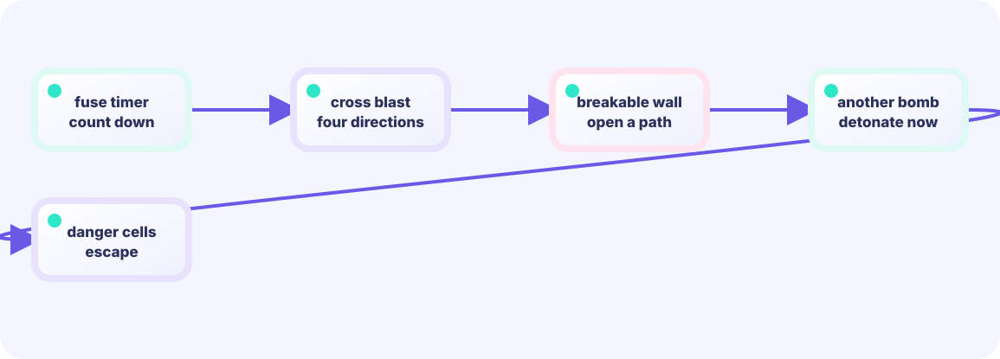

Check placement
Add a bomb at the player cell only when that cell has none.
★★☆☆☆ / PLAYABLE
A bomb is game data with a position and time remaining. Decrease it every frame and switch to the blast state at zero.
The frame math sits in the same LEVEL 01 state boundary.
FIRST-TIME READER
Find where this one line is used, then follow how its value changes on screen. This is the shared game-state boundary: add rules in Update, then choose any independent renderer in Draw. The numbered steps below add one system at a time.
ONE RULE TO TRACE
Match the explanation to this line, then test the change in the game.
bomb.timer--; if bomb.timer <= 0 { explode() }ONE GAME, OPEN-ENDED PRESENTATION
Update and the game struct own the facts of the game. The views below observe the same autoplaying position, box, and goal at the same time. Only Draw differs, and these views can be replaced by any other presentation.
This continues the shared basics. If the frame loop is new, start with LEVEL 01 Update / Draw.

PLAYABLE / WEBASSEMBLY
Move with arrows/WASD and place with Space. Click or touch the on-screen controls. Leave the bomb cell before its timer ends.
DEEP DIVE
It is more than a drawn circle: keep position, timer, and state together.
Add a bomb at the player cell only when that cell has none.
Update advances every bomb timer.
Enable hit tests only during the short blast state, then remove it.
TRY IT / FUSE
Place arms a bomb; Step drains the fuse. At 0 it BLASTs; another step removes it. Classic state machine.
Real fuse is ~90 frames; this lab uses 8 so you can feel it.
TRY IT · GO
bombs = append(bombs, Bomb{x, y, timer: fuse}) b.timer--; if b.timer <= 0 { b.state = blast } remove(b)
—
THE FUSE STATE MACHINE
timer-- each framethentimer<=0 → blasting → removeNot a drawn circle—position, timer, and state in one struct.
GO + EBITENGINE
While armed it counts down to boom. At 0, set blasting and reuse the same field as blast lifetime. One variable, two jobs — watch the flag.
for i := range bombs {
bombs[i].timer--
if !bombs[i].blasting && bombs[i].timer <= 0 {
bombs[i].blasting = true
bombs[i].timer = blastLife
}
}WITHOUT A SLICE
A slice lets many bombs keep their own place and timer.
WITH A FUSE
Prevent stacking on one tile so draw and hit tests stay clear.
TRY NEXT
Raise the place limit to 2 and watch different fuse times.
FEEDBACK